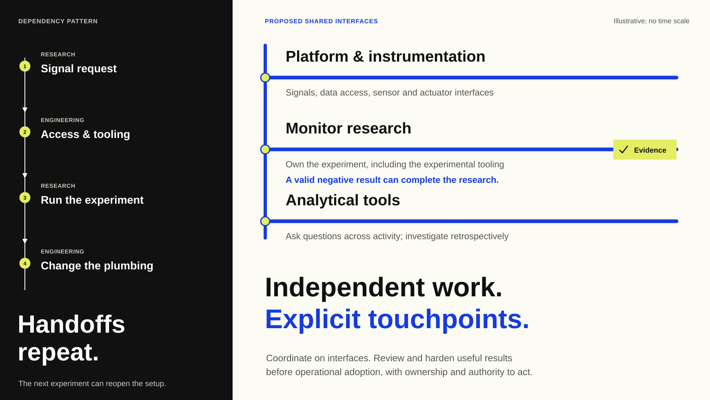

Asymmetric comparison
Compress the repeated dependency chain; give parallel work the larger surface.

A narrow dark column carries serial handoffs. The expansive right side carries three work lanes and their common interface. The unequal composition expresses a proposed change in how work is organized, not measured speed or effort.
Text equivalent and limits
A serial dependency pattern alternates research signal requests, engineering access and tooling, research experiments and engineering changes. A larger parallel surface proposes shared interfaces for platform and instrumentation, monitor research and analytical tooling. Research can end with a valid negative result. Coordination remains at interfaces and when useful results undergo review and hardening for operational adoption. Ownership and authority remain explicit. The comparison is an illustrative proposal, not a measured process improvement; there is no time scale.
This approved static reference interprets a control-program proposal. It is calibration material, not a deployed system or factual input for another artifact.